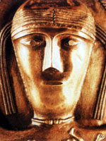

Дану або Ану, Дон, в кельтській (ірландській, валлійській) міфології мати-прародителька, що дала ім'я расі прекрасних, але гнівливих богів Племен Дану, які правили Ірландією до приходу синів Миля. У валлійської міфології Дану відповідає Дон, богиня-матір, дочка Матонві, сестра Мата і, можливо, дружина бога Беленуса (Бела). У неї було безліч дітей, серед яких найбільш відомі Амаетон, Аріанрод, Гованнон, Гвидион, Гільветві і Нудд.
Фігура богині, оточена птахами і дітьми, поряд з іншими божествами, прикрашає котел з Гундеструпа. Племена богині Дану, в ірландській міфології - основна група богів, що панували над Ірландією до приходу синів Миля, предків сучасних ірландців.
Племена богині Дану прийшли з північних островів, де сповнилися друидической мудрості і магічних знань. Саме вони принесли до Ірландії чотири талісмана: камінь Фал, що випускав крик під ногами законного короля; чарівний меч свого проводиря Нуаду, що завдавав тільки смертельні удари; переможне спис бога сонця Луга, який вбив Балора і приніс Племенам богині Дану перемогу над фоморами; невичерпний котел достатку батька богів Дагда, головного бога ірландської міфології.
Хоча вирішальний внесок у розгром фоморов в другій битві при Мойтуре вніс бог сонця Луг, основна частка почестей дісталася Дагда, який продовжував користуватися великою повагою навіть після того, як Племена богині Дану були вигнані синами Міля. Дагда довелося вирішувати задачу облаштування які зазнали поразки Племен богині Дану в глибині землі. Так само, як фомори сховалися під водами моря, переможені Племена богині Дану стали владиками нижнього світу. Минуло багато століть, і могутні боги поступово перетворилися в фей, гоблінів і баньши.